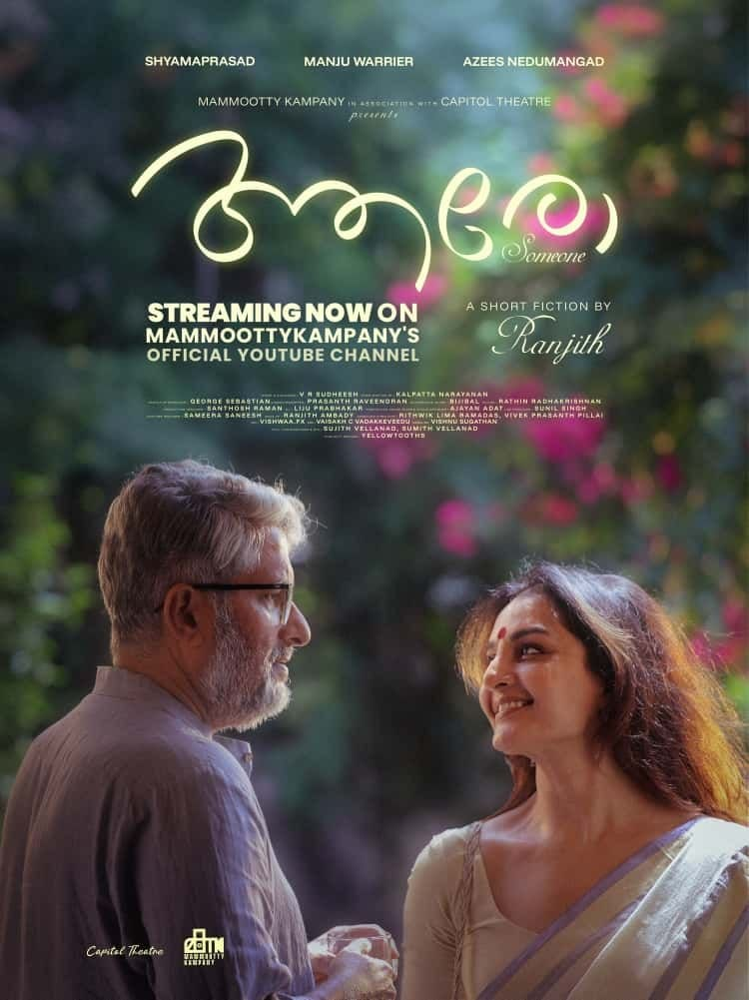
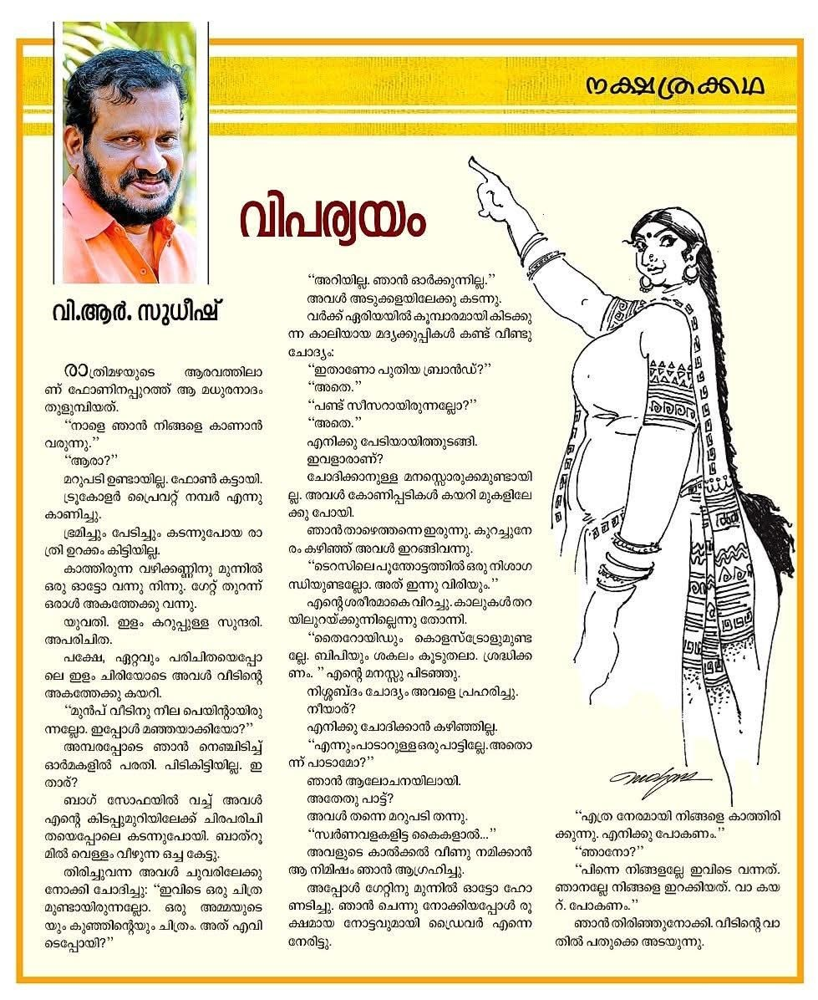

Director: രജ്ഞിത്ത്
Review by: ഷിജിൽ എം പി
ഒറ്റപ്പെടലിൻ്റെ സ്വതന്ത്ര്യം...
ഒറ്റപ്പെടലിൻ്റെ വേദന...
ആരെങ്കിലും വരുമെന്ന പ്രതീക്ഷ...
പിന്നീട് ആ ഒരു പ്രതീക്ഷ പോലും സ്വപ്നമാണെന്നെ തിരിച്ചറിവ്...
എല്ലാം കൂടെ 21 മിനിറ്റിൽ പറഞ്ഞു പോകുന്ന കഥ.
കുറച്ചു നാളായി Social media കളിൽ പോസിറ്റീവും നെഗറ്റീവും ആയ അഭിപ്രായങ്ങൾ കൊണ്ട് നിറഞ്ഞുനിൽക്കുന്ന ഒരു ഹ്രസ്വചിത്രമാണിത്.
Mammootykampany ആണ് നിർമ്മാണം. അതിൻ്റെ ഒരു making quality കാണാനുണ്ട്.
🎥 സിനിമയെക്കുറിച്ച് പ്രസാദ് മാഷ്

'ആരോ', Short film എത്ര പേർ കണ്ടു എന്നറിയില്ല.
സോഷ്യൽ മീഡിയയിൽ വൻ ചർച്ച നടന്നു വരുന്നുണ്ടല്ലോ. ഇന്നലെ രാത്രി അത് കണ്ടു എനിക്ക് റൊമ്പ പുടിച്ചു, ഗംഭീരം👍😊
വി.ആർ. സുധീഷിൻ്റെ 'വിപര്യയം' എന്ന മനോരമ വീക്കിലിയിൽ വന്ന ഒരു മിനിക്കഥയെ ആധാരമാക്കിയാണ് സിനിമ എടുത്തിരിക്കുന്നത്.
അതിൻ്റെ ഒരു തമാശ പറയാം. ആ കഥ ഈ കഴിഞ്ഞ സെപ്തംബർ മാസത്തിലാണ് മനോരമയിൽ വന്നത്. അത് വി.ആർ. സുധീഷിൻ്റെ തന്നെ ഫേസ് ബുക്ക് പേജിൽ ഞാൻ Sept 7 ന് വായിച്ചു. വായിച്ചപ്പോൾ എനിക്ക് ആ കഥ നന്നായി ബോധിച്ചു. അങ്ങനെ ഇഷ്ടപ്പെട്ടതു കൊണ്ടും ചെറുതായതു കൊണ്ടും ഞാൻ ആ കഥ ഈ ഗ്രൂപ്പിൽ, റീഡേഴ്സ് ഫോറത്തിൽ അന്ന് തന്നെ ഷെയർ ചെയ്തിരുന്നു.
ഇന്നലെ വി.ആർ. സുധീഷിൻ്റെ മറ്റൊരു ഫേസ് ബുക്ക് പോസ്റ്റ് കണ്ടപ്പോഴാണ് 'ആരോ' സിനിമ ആ കഥയാണെന്ന് മനസ്സിലായത്. രാത്രി റീഡേഴ്സ് ഫോറത്തിൻ്റെ പഴയ ഏടുകളിലൂടെ സഞ്ചരിച്ച് സഞ്ചരിച്ച് ചെന്നപ്പോൾ അതാ കിടക്കുന്നു വിപര്യയം എന്ന കഥ ഫോറത്തിൽ. എന്നെ ആഹ്ലാദ പുളകിതനാക്കിയത്, ആ കഥയ്ക്ക് ഇവിടെ നിന്നും ഒരു ലൈക്കും പോലും കിട്ടാതെ ഇപ്പോഴും അങ്ങനെ നിൽക്കുന്ന കാഴ്ചയാണ്.😄ഇഷ്ടപ്പെടാത്തതാണോ വായിക്കാത്തതാണോ എന്നറിയില്ല😊. ആ കഥ വായിച്ച ഹാങ്ങ് ഓവറിൽ ഞാൻ ഈ കഥയെക്കുറിച്ച് ആരോടൊക്കെയോ സംസാരിച്ചിരുന്നു. Sept 7 ന് രാത്രി ഇ. സന്തോഷ് കുമാർ ഇവിടെ വീട്ടിലുണ്ടായിരുന്നു, അദ്ദേഹത്തോടും ഈ കഥയെക്കുറിച്ച് ഞാൻ സംസാരിച്ചിരുന്നു, കക്ഷി വായിച്ചില്ല എന്നു പറഞ്ഞപ്പോൾ ഒരു ചെറു സംഗ്രഹം ഞാൻ പറഞ്ഞു.